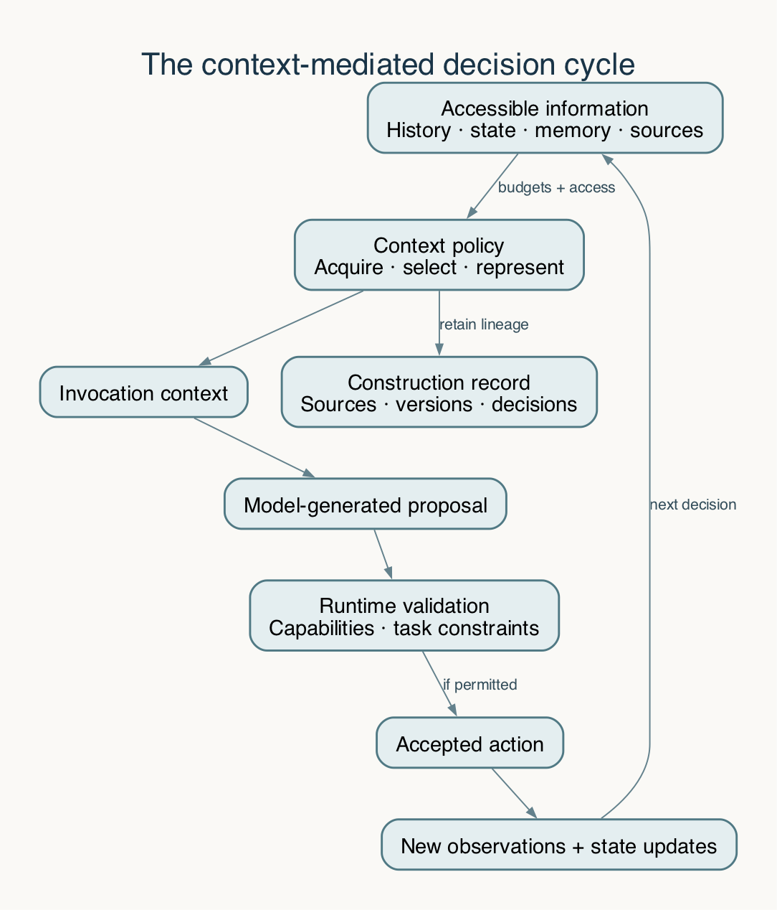

Context engineering: foundations, significance, and a research agenda
Introduction
The behavior of LLM oriented systems depends on the information made available to it at each inference step. In an agentic system, that information changes as the system acquires observations, invokes tools, revises plans, stores memories, and acts on an external environment. Context engineering concerns the design and evaluation of these information processes. This article develops a working definition of the field, distinguishes it from adjacent practices, and explains its significance for intelligent systems that operate under incomplete information and finite computational resources. It proposes a conceptual model in which context construction is a constrained, sequential policy governing information acquisition, representation, retention, and presentation. The argument draws on research in in-context learning, RAG, partial observability, long-context evaluation, memory systems, and prompt-injection security. My thesis is that context should be studied as a system-level determinant of behavior whose quality requires empirical evaluation, explicit authority boundaries, and reproducible construction. In an effort to fully describe and expand my own understanding I will attempt to publish a series of articles exploring context engineering.
Definitions
The following definitions establish how these terms are used in this article. Formal distinctions are developed in the relevant sections.
- Large language model (LLM): A model trained to process and generate language. In an agentic system, it can interpret information and propose actions; surrounding software determines how those proposals are executed.
- Inference: The computation through which a trained model produces an output from supplied inputs, ordinarily without updating its learned parameters.
- Model invocation: One execution of the model on a particular input. An agent may make many invocations while completing a task.
- Context: The information supplied to a model for an invocation, including instructions, examples, evidence, task state, and tool descriptions. Information stored elsewhere becomes part of that invocation's context only when included in its input.
- Agent: A software system that uses a model to select actions, receive observations, and continue working toward an objective. Its behavior also depends on its tools, state management, and execution rules.
- Environment: The external system or setting in which the agent operates, such as a repository, test environment, document collection, or deployment platform.
- Observation: Information the agent receives about its environment, such as file contents, a test result, an API response, or a screenshot. An observation provides evidence about a particular scope and time; it need not reveal the environment's complete current state.
- Action: An operation the agent selects or requests, such as searching documents, reading a file, editing code, or calling an API. A proposed action, a submitted request, and a confirmed outcome are distinct events.
- Tool: An interface through which the agent reads information or performs operations in its environment. A tool's returned result is an observation; invoking it may also change external state.
- Runtime: The software that coordinates model invocations, tool execution, permissions, and state updates.
- Task state: The system's explicit record of the current objective, constraints, accepted progress, unresolved questions, and pending operations. It is distinct from the full conversation history.
- Belief state: In a partially observable Markov decision process, a probability distribution over possible environment states conditioned on the available history and initial belief. A practical task snapshot may preserve uncertainty without implementing this full formal representation.
- Memory: Information retained for use beyond the current invocation, including earlier observations, reusable assertions, or procedures. Memory must be retrieved or otherwise supplied to influence a later invocation.
- Retrieval: The process of finding and acquiring information from an external collection or memory store. Retrieval-augmented generation (RAG) uses retrieved information to condition model generation.
- Representation: The form in which information is expressed, such as raw source text, an extract, a summary, a table, or a structured record. Changing the representation can change which details remain available.
- Provenance: The record of where information originated and how it was produced or transformed. It supports traceability without establishing that a claim is true.
- Authority: The recognized right of a source or identity to define requirements, authorize actions, or update accepted state within a specified scope. Relevance to a task does not confer authority over it.
- Context policy: The rules or learned procedure governing information acquisition, selection, transformation, ordering, and retention for model invocations.
- Resource budget: A constraint on the work the system may consume, such as input size, model calls, retrieval operations, cost, or elapsed time. A token is a model-specific unit used to encode text and account for sequence length.
1. The problem of informational adequacy
An intelligent system can possess a capable language model and still lack the information required for a defensible decision. A coding agent may understand compatibility in general while receiving an obsolete interface specification. A research assistant may retrieve relevant documents while omitting the passage that qualifies its conclusion. A long running agent may retain a record of its actions while losing the distinction between an intended operation and a confirmed outcome.
These failures raise a problem of informational adequacy: what information must be available, in what form, and under what interpretation for the system to perform its task correctly?
The question is distinct from whether the underlying model can perform the task when supplied with sufficient evidence. It concerns how evidence and task state become available in the first place, how they change over time, and whether the surrounding system preserves the distinctions needed to use them. Investigating that problem requires a unit of analysis broader than an isolated prompt/response pair.
The few-shot learning experiments of Brown et al. demonstrate that examples and task descriptions supplied at inference can influence performance without task specific gradient updates. That finding establishes the practical significance of inference-time information while leaving open how a deployed system should select and maintain it. Brown et al. (2020)
In an agentic setting, the selection problem compounds. An observation changes what is known, an action changes the environment. a revised requirement changes what counts as success, etc... Information useful at one step may become irrelevant or misleading at a future step. Context management therefore concerns an evolving relationship between the task, the environment, the model, and the system's accumulated records.
The importance of this relationship should not be exaggerated into a claim that context explains every failure. Insufficient model capability, defective tools, ambiguous requirements, and execution errors can each determine the outcome. Context engineering provides a way to isolate the informational contribution to system behavior and to design the interfaces through which that contribution is controlled.
2. A working definition
For this series, I will use a working definition: context engineering is the design, implementation, governance, and empirical evaluation of the policies that determine which information and representations are made available to an intelligent system during inference and action.
Anthropic describes context engineering as the ongoing curation of the information available to a model during inference. Anthropic (2025) This series examines the engineering responsibilities behind that process: selecting information, maintaining its validity as a task progresses, preserving its source and authority, and recording what the model received so that its behavior can be investigated.
Four distinctions clarify that boundary. The examples below use a hypothetical task: a coding agent must migrate a service from API v1 to API v2 while preserving support for existing clients during a staged rollout. The examples illustrate conceptual distinctions; they are not reports of observed incidents or experimental results.
2.1 Available information and supplied information
A system may have access to a large repository, document collection, or interaction archive. Only some of that information is included in a particular model invocation. The accessible collection and the supplied context are therefore different objects.
A reference to an external artifact can make additional information obtainable through a later tool call. It does not establish that the referenced content has already been processed or correctly understood. Claims about what an agent knew must distinguish accessible sources, retrieved sources, and the actual request presented to the model.
In the migration example, the compatibility requirement may exist in a design document that the agent is permitted to read. A search can return the document's title without returning the paragraph that requires continued v1 support. If the model invocation receives only the title and a guide to v2, the decisive requirement is accessible but has not been supplied. Establishing this distinction changes the diagnosis: the first question is whether the context-construction process acquired the required paragraph, before asking why the model failed to follow it.
2.2 Information content and representation
The same source can be presented as raw text, an extract, a generated summary, a table, a typed state record, or a multimodal observation. These representations differ in cost and in what they preserve.
A summary may retain the principal conclusion while omitting a necessary condition. A structured record may preserve status precisely while failing to express an unexpected relationship. Context quality consequently depends on the representation and transformation process as well as source relevance.
Suppose the source requirement states, within this hypothetical scenario, that the v1 endpoint must remain available until every production client has migrated. A summary that says "move clients to v2 and remove v1" preserves the broad objective while dropping the condition governing removal. A typed record can make the distinction explicit: `target_api: v2`, `retain_v1: true`, and `removal_condition: all production clients migrated`. This representation is useful only if the extraction is correct and the condition remains linked to its source; structure alone does not establish fidelity.
2.3 Evidence and authority
A source can provide evidence about a subject without having authority to direct the agent. A document describing an API can establish parameter semantics without authorizing a deployment. A tool result can report an observed outcome without changing the user's objective.
Authority must therefore be modeled separately from semantic relevance and apparent credibility. The distinction becomes particularly consequential when external content contains instructions or when generated summaries are promoted into persistent memory.
A migration guide might recommend disabling the old endpoint immediately after installation. That recommendation is evidence about the guide's proposed procedure. It does not override the user's requirement to support a staged rollout. Similarly, a successful test report can support a claim about tested behavior, but cannot grant permission to deploy. These cases involve different kinds of authority: authority to define the task, describe a technical interface, report an observation, and authorize an external action.
2.4 Construction and use
Including sufficient evidence in a request does not guarantee that the model will use it correctly. Context construction and evidence utilization are separate stages whose failures require different interventions.
The distinction is supported by long-context studies that vary the placement or character of evidence within model inputs. It also has a methodological implication: an evaluation should measure both whether necessary information was supplied and whether the resulting decision was correct.
Two incorrect migration patches can therefore have different explanations. In one run, the request omits the compatibility condition. In another, the condition is present and unambiguous, yet the model still proposes removing v1. Repairing the first run requires changing information acquisition or assembly. The second calls for investigating evidence use, task interpretation, and action validation. Supplying the missing condition is an informative intervention in the first case; repeating it is not a demonstrated solution to the second.
3. Intellectual foundations and adjacent practices
Context engineering draws on established fields. Its analytical value lies in coordinating their methods around a particular system boundary rather than treating every contributing technique as a new invention.
3.1 Inference-time conditioning
For an autoregressive language model with parameters θ, the next-token distribution depends on a preceding sequence. At the application level, changing that sequence changes the conditions under which the model generates a response. Transformer attention provides one mechanism through which positions in the sequence interact, although contemporary systems may use architectures and serving methods that differ from the original formulation. Vaswani et al. (2017)
This observation establishes why instructions, examples, evidence, and tool definitions can matter. It does not imply that every change has a predictable or monotonic effect. The relationship between a context transformation and downstream task quality remains an empirical question.
3.2 Prompt engineering
Prompt engineering addresses the formulation and organization of instructions, demonstrations, and output requirements. Those choices remain part of context engineering. The broader problem also includes selecting sources, tracking changing state, deciding when to retrieve, preserving information across interruptions, and enforcing the boundaries around external data.
The distinction is one of scope rather than a clean historical replacement. A system can have an effective instruction prompt and an inadequate evidence pipeline. It can also retrieve excellent evidence while presenting ambiguous instructions. Evaluation must permit both possibilities.
3.3 Information retrieval and retrieval-augmented generation
RAG connects model generation to information stored outside the model's parameters. Lewis et al. study architectures combining parametric and non-parametric memory for knowledge-intensive tasks. Their work establishes a concrete mechanism for incorporating retrieved evidence into generation. Lewis et al. (2020)
Retrieval is one component of the broader context problem. A system must also determine the question being asked, the freshness and authority of candidate sources, how retrieved material is represented, and whether additional acquisition is necessary. A successful retrieval operation can still produce an inadequate decision context.
This boundary also distinguishes context engineering from the use of a vector database. Storage and similarity search support acquisition. They do not by themselves establish evidence sufficiency, accepted task state, or the validity of an assertion after the environment changes.
3.4 Partial observability and state estimation
An agent generally lacks complete access to the environment's true state. Observations can be incomplete or delayed, and an attempted action may have an uncertain outcome. The theory of partially observable Markov decision processes provides a formal reference for representing uncertainty through belief states and selecting actions from those beliefs. Kaelbling, Littman, and Cassandra (1998)
A practical agent's task snapshot is usually an approximation rather than a full probabilistic belief state. Its usefulness depends on what distinctions it preserves: accepted facts, hypotheses, unresolved outcomes, current constraints, and the observations needed to reduce uncertainty.
Calling a summary a belief state does not confer the sufficiency properties of the formal construction. Those properties depend on modeling assumptions and correct state estimation. The connection is valuable because it makes information loss and uncertainty explicit research problems.
An uncertain tool outcome provides a concrete example. The agent submits a request to create a pull request, but the response times out. The external resource may have been created even though no confirmation arrived. A task snapshot that records "creation failed" discards a live possibility; one that records "creation outcome unknown; query the external system before retrying" preserves the distinction needed for recovery. This is a practical representation of uncertainty, without claiming to maintain a complete probability distribution over external states.
3.5 External memory and data systems
Persistent memory makes earlier observations or derived assertions available beyond a single invocation. MemGPT develops a tiered memory approach around bounded model context, illustrating the separation between information retained externally and information currently supplied to the model. Packer et al. (2023)
Persistence introduces questions familiar from data management: identity, validity, update semantics, concurrency, provenance, and deletion. A remembered assertion can be accurately retrieved and still be wrong for the current time or scope. Context engineering therefore requires attention to the lifecycle of information, including when it should cease to influence action.
4. A conceptual model of context construction
Consider an agent operating at decision step t. Let Ht denote its recorded interaction history, Xt its accepted task state, Mt its persistent memory, and Dt the external sources accessible under the current authorization rules. Let Bt represent the available resource budgets.
A context policy can be represented schematically as:
where Ct is the information package supplied for the next invocation and Zt records its construction: source identities, selected representations, transformation versions, ordering, and exclusion decisions. The policy may involve additional observations and retrieval calls; it need not be a single deterministic function.
The model and runtime then produce a proposal and an accepted action:
where Ut denotes generated output and Γ is the runtime's validation and action-selection procedure under capabilities Kt. The runtime may reject a proposal, request more evidence, or perform no external action. Subsequent observations update the system's records and task state.
These expressions define an analytical decomposition, not a validated theory of all agent behavior. They separate context construction, model generation, action authority, and state update so that each can be investigated.
The migration task gives each term an operational interpretation:
| Term | Hypothetical instance |
|---|---|
| Ht | Earlier searches, edits, and tool observations recorded during the migration |
| Xt | The accepted goal: introduce v2 while retaining v1 until the rollout condition is met |
| Mt | A source-linked record of the service's earlier interface and verification procedure |
| Dt | The current repository, migration guide, client inventory, and test artifacts the agent may access |
| Bt | The permitted input size, retrieval work, and remaining execution time |
| Ct | The selected requirement, relevant adapter code, and current client evidence supplied to the next invocation |
| Zt | A manifest identifying those sources, their versions, and any transformations |
| Ut | A generated proposal to modify the adapter |
| Γ | Runtime checks of the proposal's permitted scope and expected repository revision |
| At | A permitted edit, or no edit if validation rejects the proposal |
After the edit, a test result becomes a new observation. It can support an update to X_{t+1} only within the scope it establishes: passing tests on one revision do not automatically verify later edits. The notation thus identifies where information is selected, interpreted, acted upon, and accepted as state.

Figure 1. A proposed analytical decomposition of context-mediated action. The construction record supports reconstruction; runtime validation remains separate from model-generated proposals. The diagram contains no empirical measurements.
4.1 Constrained policy selection
A research objective can be written as expected task value less resource costs:
subject to authorization, retention, admissibility, and resource constraints. Here τ is a complete task trajectory, V measures the declared outcome, K measures resource expenditure, and L measures latency. The model configuration and execution environment are held fixed when the experiment seeks to isolate π.
The expression makes several commitments visible. Context is evaluated through task outcomes. Acquisition and transformation have costs. The effect of a decision may be delayed. Some conditions define admissibility and cannot be compensated for by a higher average quality score.
There is no universal choice of V, weights, or constraints. A research workflow and an interactive support tool may accept different latency and uncertainty. A comparison is meaningful only when those choices are declared.
Consider two hypothetical policies for the migration. One supplies a large collection of raw files in a single request. Another retrieves a smaller set, extracts relevant sections, and validates the resulting representation. The second policy may use fewer input tokens while spending more time on retrieval and validation. Neither is preferable from input size alone. The comparison must include final task quality and the resources consumed by the complete trajectory. An unauthorized deployment remains inadmissible under either policy, regardless of its speed or apparent utility.
4.2 Task-relative compression
Information theory supplies a useful question: which distinctions must a representation preserve for a specified task? The information bottleneck formulation explicitly relates compression to retention of information about a target variable. Tishby, Pereira, and Bialek (2000)
Applying that idea to agents requires care. The target may change after a new observation. Relevant items can be complementary or contradictory. The joint distribution needed for a formal information-theoretic objective is generally not available to an application.
Consequently, a compact summary should not be called a sufficient representation merely because it is readable or answers one question correctly. Sufficiency must be defined relative to a task, model, information distribution, and acceptable error. Establishing useful approximations is part of the research agenda.
A summary sufficient to answer "which API is the migration targeting?" may contain only the target version. The same summary is insufficient to answer "may v1 be removed now?" That decision also requires the removal condition and evidence about the production clients. If the next observation reveals an unmigrated client, the information needed for continuation changes again. Compression must therefore be assessed against the decisions it is intended to support, including whether omitted details remain recoverable.
5. Why context engineering matters
5.1 Model capability and situated performance can diverge
An evaluation using an ideal evidence package estimates what a model can do under those supplied conditions. A deployed system must construct the package from incomplete, changing, and unevenly structured sources.
That difference creates a tractable engineering responsibility. If performance is strong with known sufficient evidence and weak with the actual construction pipeline, the discrepancy motivates investigation of acquisition, selection, freshness, or representation. If performance remains weak under the ideal condition, context management alone is unlikely to resolve the task.
This distinction prevents both overconfidence in the model and overconfidence in infrastructure. Each requires a separate evidential basis.
5.2 Input capacity does not establish effective information use
Lost in the Middle reports position-sensitive performance on multi-document question answering and key-value retrieval for the systems studied. Its significance is methodological: evidence can be present in an accepted input while its placement affects task performance. Liu et al. (2023)
RULER extends simple needle retrieval to configurable tasks including tracing and aggregation. NoLiMa tests retrieval where questions and evidence have minimal literal overlap. Together, these studies support evaluating different forms of long-context use rather than treating a nominal input limit as a complete capability specification. Their historical results do not determine the behavior of every later model. Hsieh et al. (2024), Modarressi et al. (2025)
Increasing input capacity can be valuable. It does not determine which sources are current, whether a contradiction is resolvable, or whether the supplied evidence supports an action. Those remain context-policy and evaluation questions.
5.3 Sequential action makes errors path-dependent
In an agentic workflow, an interpretation can determine the next query, the next edit, and the information subsequently observed. An incorrect premise can therefore alter the trajectory instead of producing only a single incorrect answer.
ReAct provides a research example of interleaving model reasoning and actions that gather external information. The resulting dependence between observations and subsequent decisions is precisely why context should be evaluated over complete trajectories as well as frozen invocations. Yao et al. (2023)
The stronger claim that errors necessarily compound at a particular rate would require additional assumptions and measurements. Their effects can be correlated, corrected, or constrained by the runtime. The defensible implication is that a static accuracy score is insufficient to characterize every long-horizon failure mode.
5.4 Memory creates obligations to revise knowledge
A persistent assertion can outlive the evidence conditions under which it was accepted. An agent that remembers an obsolete configuration perfectly has a memory problem despite successful recall.
LongMemEval evaluates several abilities beyond extraction, including knowledge updates, temporal reasoning, and abstention. These categories support a broader interpretation of memory quality: useful memory must sometimes change its answer or decline to answer. Wu et al. (2025)
For context engineering, that implies a lifecycle encompassing source attribution, scope, correction, supersession, and retrieval eligibility. A memory architecture should be assessed by what it causes the system to believe and do under changing evidence, as well as what it can recover from an archive.
Suppose an agent remembers that the service's production interface is v1. After a completed rollout, an authoritative deployment observation establishes v2 as the current interface. A question about the present should use the updated record; a question about behavior before the rollout may still require the earlier one. Deleting the old assertion indiscriminately loses history, while treating both assertions as timeless facts creates an apparent contradiction. Validity intervals and environment scope make the difference explicit.
5.5 Information has computational and economic costs
Acquisition, reranking, summarization, validation, storage, and inference all consume resources. Reducing the final input length can shift rather than eliminate cost if constructing that input requires additional model calls or repeated source expansion.
PagedAttention studies KV-cache management in language-model serving and illustrates how retained inference state affects serving efficiency. That systems result concerns resource management, not the semantic adequacy of the retained information. The two dimensions should be measured independently and then considered together. Kwon et al. (2023)
The practical objective is therefore a quality-resource tradeoff over the whole workflow. Token count alone cannot establish either efficiency or usefulness.
5.6 Context is a security and authority boundary
An agent may encounter text controlled by an actor who lacks authority over the task. Indirect prompt injection exploits that exposure by placing behavior-changing instructions in material an application retrieves or processes. Greshake et al. (2023)
This establishes a reason to preserve the distinction between evidence and instructions throughout transformations. A summary or agent handoff should not silently promote an external claim into an internal rule. Permission checks must also operate independently of a model's interpretation of the source.
The security significance of context engineering thus extends from immediate model output to persistent effects: memory writes, delegated instructions, and actions performed under runtime credentials. Provenance helps trace these transitions; it does not itself authorize them.
5.7 Reproducible context makes system behavior investigable
An answer cannot be adequately investigated if the sources, source versions, transformations, and request ordering are unknown. A current document collection cannot reliably establish what an earlier invocation received.
W3C PROV defines a vocabulary for relationships among information entities, producing activities, and responsible agents. Such relationships can support context lineage without requiring any particular storage technology. Groth and Moreau (2013)
Three guarantees should remain distinct: recovering the exact request, reconstructing its assembly from historical inputs, and reproducing the model's behavior. The first two improve investigability. Neither guarantees identical generation or external execution on a later run.
6. What would count as scientific progress?
The field needs operational definitions whose measurements correspond to meaningful claims. A relevance score is not the same as evidence sufficiency. Recall is not the same as correct application. A source citation is not proof that a conclusion follows from the source.
A useful evaluation separates at least four questions:
| Evaluation level | Question | Representative evidence |
|---|---|---|
| Acquisition and selection | Was the necessary information obtained and supplied? | Source identities, coverage labels, compiled requests |
| Representation | Were decisive conditions and uncertainties preserved? | Source-to-representation comparisons and preservation checks |
| Decision and execution | Did the system make and carry out an acceptable choice? | Answers, artifacts, constraint checks, operation outcomes |
| Lifecycle and resources | Did the result survive updates and interruptions at an acceptable cost? | Recovery traces, correction tests, complete resource accounting |
A controlled experiment should change a specified context policy while holding relevant alternatives fixed, or explicitly describe the bundled intervention. Paired task comparisons, repeated runs, and held-out task families address different aspects of uncertainty and generalization.
For a position experiment, keep the migration requirement, code, and distractor material fixed, and change only where the requirement appears in the serialized request. Record whether the generated patch preserves v1 support. For a compression experiment, keep the source evidence fixed and compare its raw and summarized representations instead. Changing position, compression, model configuration, and tool access simultaneously would evaluate a bundled system change; it would not isolate which context intervention produced the difference. Both studies require enough task instances and repeated runs to characterize the uncertainty relevant to their claims.
Model-based judges can help evaluate open-ended outcomes, but they require validation against the actual rubric. Zheng et al. document biases and limitations in LLM-based judging; an evaluator's fluency does not make its verdict a ground-truth observation. Zheng et al. (2023)
Several questions follow from this framework. Can the marginal value of evidence be estimated before inference? Which state representations remain adequate after a requirement changes? When does compression save resources without losing the distinctions needed later? How should authority and uncertainty survive delegation? Which findings transfer across models and task domains?
These are research questions, not promises that a general context controller already solves them. A useful contribution could be a better policy, a counterexample to an assumed benefit, a benchmark that exposes a neglected failure, or a reproducible explanation of a system's operating limits.
7. The purpose of the series
This series proceeds from conceptual foundations to implementable components and then to empirical evaluation. The progression reflects dependencies in the problem: information must be represented before it can be selected reproducibly; state and memory need explicit semantics before continuation can be evaluated; a claimed optimization needs a baseline and an outcome measure.
The early articles examine context as infrastructure, budget allocation, model mechanics, and explicit task state. The middle articles develop retrieval, compilation, long-context diagnostics, compaction, memory, recovery, handoffs, and storage. The later articles examine security, experimental design, adaptive policies, and the conditions for an independently inspectable research contribution.
The central proposition is that context constitutes an engineered interface between available information and situated model behavior. Its significance follows from the consequences of that interface for what a system can know, what it may treat as authoritative, how it continues over time, and how its decisions can be examined.
The first methodological commitment is therefore to identify the information required for a defensible task decision and retain a record of the information actually supplied. Comparing those two objects establishes a concrete starting point for the engineering and research developed in Article 01.
References and research notes
- Anthropic. (2025, September 29). Effective context engineering for AI agents. Engineering article. Used for the practitioner framing; it is not treated as a controlled validation of the proposed conceptual model.
- Brown, T. B., et al. (2020). Language Models are Few-Shot Learners. Advances in Neural Information Processing Systems. Used for inference-time examples and task conditioning without task-specific gradient updates.
- Greshake, K., et al. (2023). Not what you've signed up for: Compromising Real-World LLM-Integrated Applications with Indirect Prompt Injection. Used for external-content injection as a threat mechanism; application-specific defenses require separate evaluation.
- Groth, P., & Moreau, L. (Eds.). (2013). An Overview of the PROV Family of Documents. W3C Working Group Note. Used for provenance terminology, not as proof of information truth or authorization.
- Hsieh, C.-P., et al. (2024). RULER: What's the Real Context Size of Your Long-Context Language Models?. Conference on Language Modeling. Used for configurable long-context evaluation beyond simple needle retrieval.
- Kaelbling, L. P., Littman, M. L., & Cassandra, A. R. (1998). Planning and acting in partially observable stochastic domains. Artificial Intelligence, 101, 99–134. Used for belief-state reasoning under formal assumptions; practical summaries are not assumed to inherit sufficiency guarantees.
- Kwon, W., et al. (2023). Efficient Memory Management for Large Language Model Serving with PagedAttention. ACM Symposium on Operating Systems Principles. Used for serving-state resource management, separately from evidence-use quality.
- Lewis, P., et al. (2020). Retrieval-Augmented Generation for Knowledge-Intensive NLP Tasks. Advances in Neural Information Processing Systems. Used for generation combining parametric and retrieved non-parametric information.
- Liu, N. F., et al. (2023). Lost in the Middle: How Language Models Use Long Contexts. arXiv:2307.03172. The date identifies the initial preprint. Used for position-sensitive performance in the evaluated settings, without assuming universality across later models.
- Modarressi, A., et al. (2025). NoLiMa: Long-Context Evaluation Beyond Literal Matching. International Conference on Machine Learning. Used for distinguishing associative retrieval from literal-match-heavy evaluation.
- Packer, C., et al. (2023). MemGPT: Towards LLMs as Operating Systems. arXiv:2310.08560. Used for memory tiers around bounded invocation context, not a complete theory of accepted task state.
- Tishby, N., Pereira, F. C., & Bialek, W. (2000). The information bottleneck method. arXiv:physics/0004057. The date identifies the arXiv submission. Used as a formal reference for target-relative compression, not a validated context-utility estimator.
- Vaswani, A., et al. (2017). Attention Is All You Need. Advances in Neural Information Processing Systems. Used for the transformer attention foundation; contemporary architectures may differ.
- Wu, D., et al. (2025). LongMemEval: Benchmarking Chat Assistants on Long-Term Interactive Memory. International Conference on Learning Representations. Used for memory updates, temporal reasoning, and abstention in the benchmark's conversational setting.
- Yao, S., et al. (2023). ReAct: Synergizing Reasoning and Acting in Language Models. International Conference on Learning Representations. Used for interleaved reasoning and action, without attributing durable execution guarantees to the method.
- Zheng, L., et al. (2023). Judging LLM-as-a-Judge with MT-Bench and Chatbot Arena. Advances in Neural Information Processing Systems, Datasets and Benchmarks Track. Used for evaluator bias and calibration concerns, not universal judge reliability.